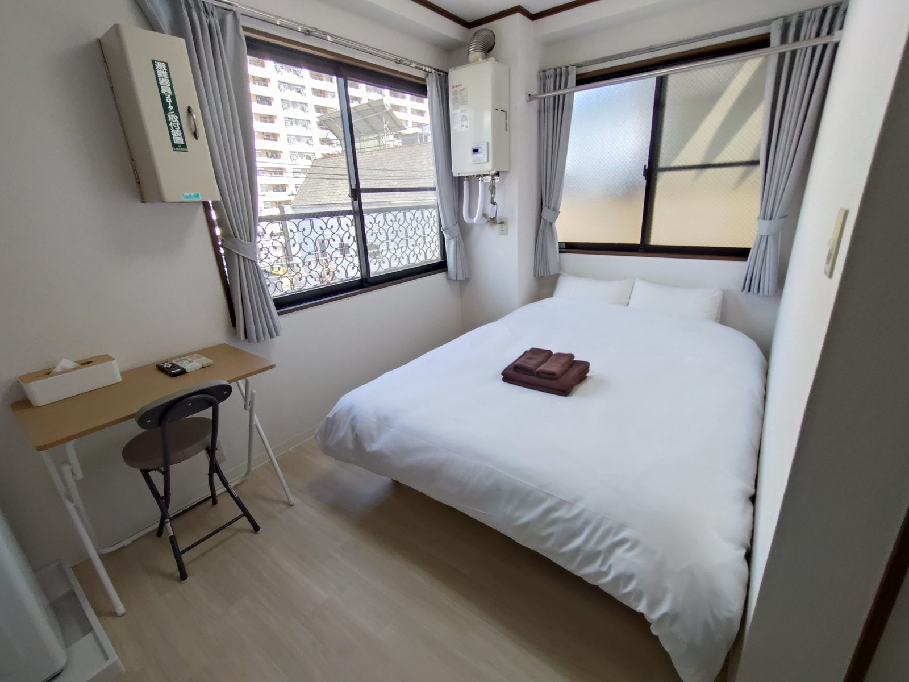
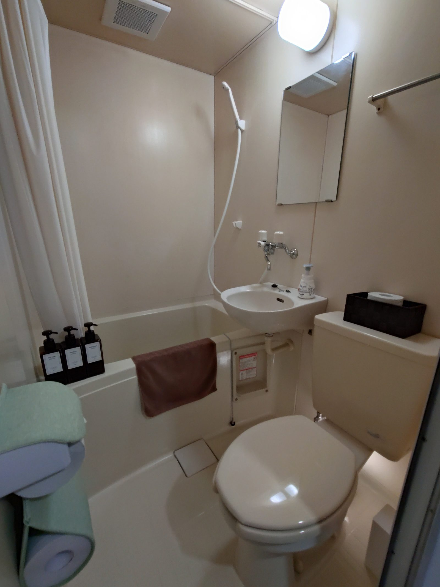
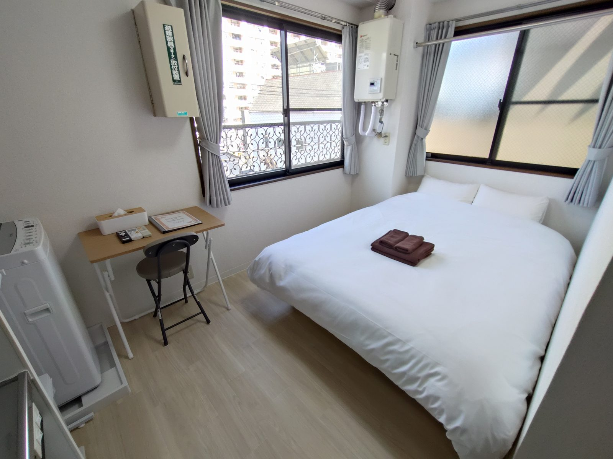
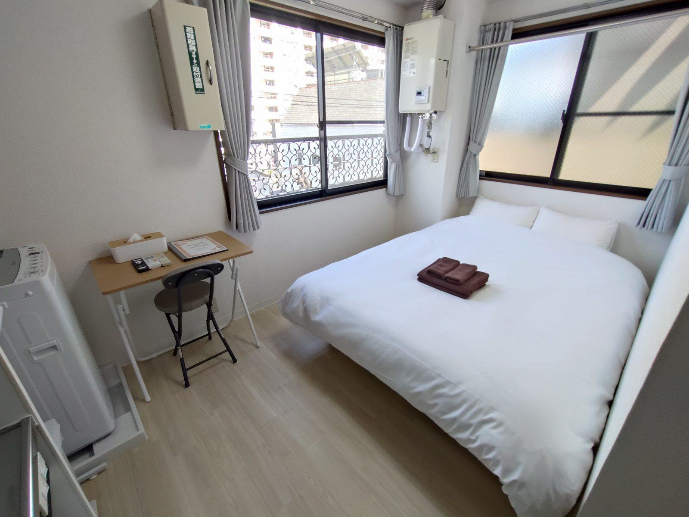
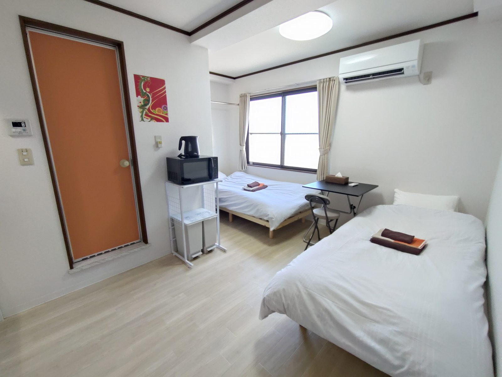

4F
402
Room 402
A compact private room useful for solo travelers, business trips, and guests who want a simple base near Kanamachi.
View Room 402 on AirbnbPrivate apartment-style rooms in an active nightlife area near Kanamachi Station. Ideal for independent travelers, friends traveling together, business trips, concerts, and guests returning late after enjoying Tokyo.
Gold Town Kanamachi is best for guests who value convenience, privacy, and a practical base in Tokyo. The property is located in an active entertainment district, and the rooms are on the 4th and 5th floors with no elevator.
This is not a quiet resort hotel. It is a convenient, apartment-style stay for travelers who want a private base near food, drinks, transportation, and Tokyo nightlife.
Use the room like a compact private hotel room, with the comfort of an apartment-style space.
A practical option for friends visiting Tokyo for food, drinks, events, concerts, or nightlife.
Self check-in makes it easier to arrive after sightseeing, dinner, work, or late-night plans.
Each room is designed for short stays, business trips, and multi-day travel. You can relax privately, use Wi-Fi, prepare simple food, and do laundry during your stay.
Useful for work, video calls, streaming, and travel planning.
Convenient for snacks, light meals, and late-night food.
Helpful for multi-day stays or travelers packing light.
Store drinks, food, and convenience-store items.
Stay comfortable throughout the year.
Arrive without meeting staff in person after your day in Tokyo.
Rooms 402 and 405 are on the 4th floor. Room 503 is on the 5th floor. Please note that there is no elevator in the building.
A compact private room useful for solo travelers, business trips, and guests who want a simple base near Kanamachi.
View Room 402 on Airbnb
A clean 4th-floor room. A practical choice for guests who plan to enjoy Tokyo until late.
View Room 405 on Airbnb
A 5th-floor room that works well for friends, event trips, and guests who want a practical Tokyo base.
View Room 503 on AirbnbThe building is on a lively street near restaurants, bars, karaoke venues, convenience stores, pharmacies and drugstores, and other nighttime businesses. This makes it convenient for guests who plan to return late.

These photos are included so guests can understand both the rooms and the surrounding atmosphere before booking.








Use this page as a simple guide for your stay in Kanamachi. Find nearby food, convenience stores, station access, and tips for returning after a late night in Tokyo.
Nearby convenience stores, ramen shops, fast food, and casual restaurants are useful after a night out.
A practical base after concerts, sports games, festivals, business dinners, and late plans.
Self check-in and a clear building exterior help guests arrive with less stress.
Yes. The rooms use self check-in, which makes late arrival easier. Please check the exact instructions after booking.
No. Rooms are on the 4th and 5th floors, and the building does not have an elevator. Please consider this if you have heavy luggage or mobility concerns.
No. The property is located in an active entertainment district. Guests may hear voices, street activity, and everyday city sounds, especially at night.
All guests who meet Airbnb's booking requirements are welcome. Please review the stairs, neighborhood atmosphere, and noise information carefully before booking.
The rooms are private, but the area is lively at night and the building has no elevator. Guests who need a calm family-focused environment may prefer a different area.
Yes. The rooms have useful amenities such as Wi-Fi, a refrigerator, a microwave, and a washing machine.
Stay comfortably, explore freely, and enjoy Tokyo at your own pace.